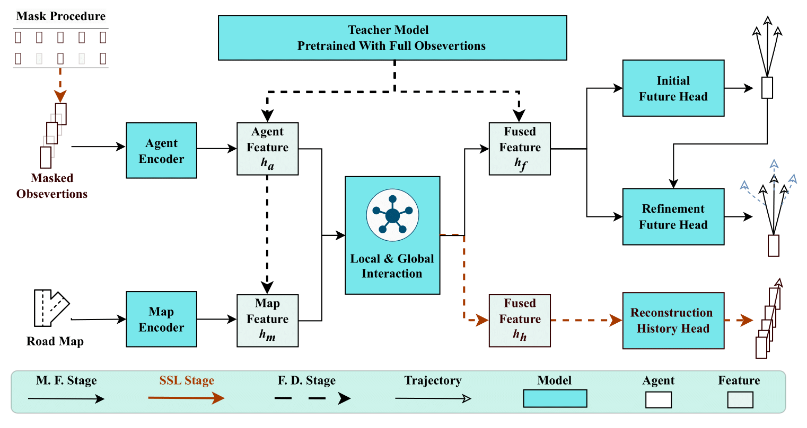
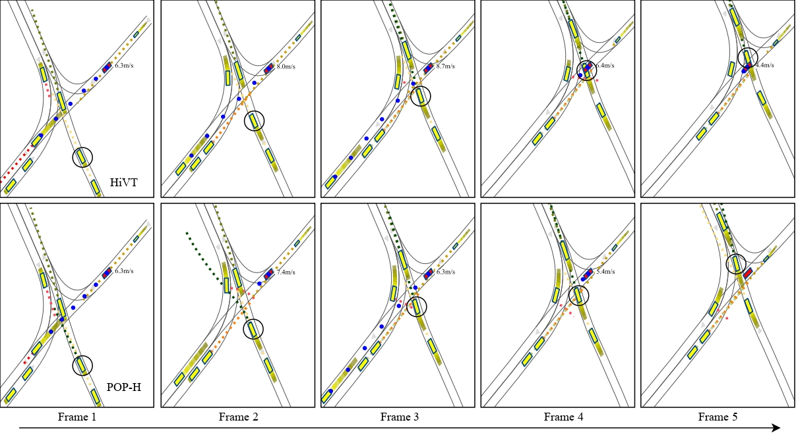

Improving Autonomous Driving Safety with POP: A Framework for Accurate Partially Observed Trajectory Predictions
- Sheng Wang
- Yingbing Chen
- Jie Cheng
- Xiaodong Mei
- Yongkang Song
- Ming Liu
Hong Kong University of Science and Technology, RAM-LAB
Abstract & Method
Accurate trajectory prediction is crucial for safe and efficient autonomous driving, but handling partial observations presents significant challenges. To address this, we propose a novel trajectory prediction framework called Partial Observations Prediction (POP) for congested urban road scenarios. The framework consists of two key stages: self-supervised learning (SSL) and feature distillation. POP first employs SLL to help the model learn to reconstruct history representations, and then utilizes feature distillation as the fine-tuning task to transfer knowledge from the teacher model, which has been pre-trained with complete observations, to the student model, which has only few observations. POP achieves comparable results to top-performing methods in open-loop experiments and outperforms the baseline method in closed-loop simulations, including safety metrics. Qualitative results illustrate the superiority of POP in providing reasonable and safe trajectory predictions.

Case Analysis
We demonstrate a scenario in our simulator where a self-driving vehicle navigates through a congested traffic intersection, as shown in Figure \ref{fig}. During the initial phase of the simulation, the AV intends to traverse the intersection with a planned speed of 6.3 m/s. However, due to insufficient observation, the HiVT predictor inaccurately predicts the future trajectory in the first two frames. As a result, the AV fails to account for the movement of the vehicle below and begins to accelerate. By frame 3, the speed has already reached 8.7 m/s, making it too late to decelerate and leading to a collision. In contrast, the AV with the POP-H predictor consistently provides more reasonable predictions (indicated by the black scatter line) from frame 1 to frame 5, ensuring a higher level of safety.

More Animations

HiVT
POP-H
HiVT
POP-H
HiVT
POP-H
HiVT
POP-H
BibTeX
@misc{wang2023improving,
title={Improving Autonomous Driving Safety with POP: A Framework for Accurate Partially Observed Trajectory Predictions},
author={Sheng Wang and Yingbing Chen and Jie Cheng and Xiaodong Mei and Yongkang Song and Ming Liu},
year={2023},
eprint={2309.15685},
archivePrefix={arXiv},
primaryClass={cs.RO}
}